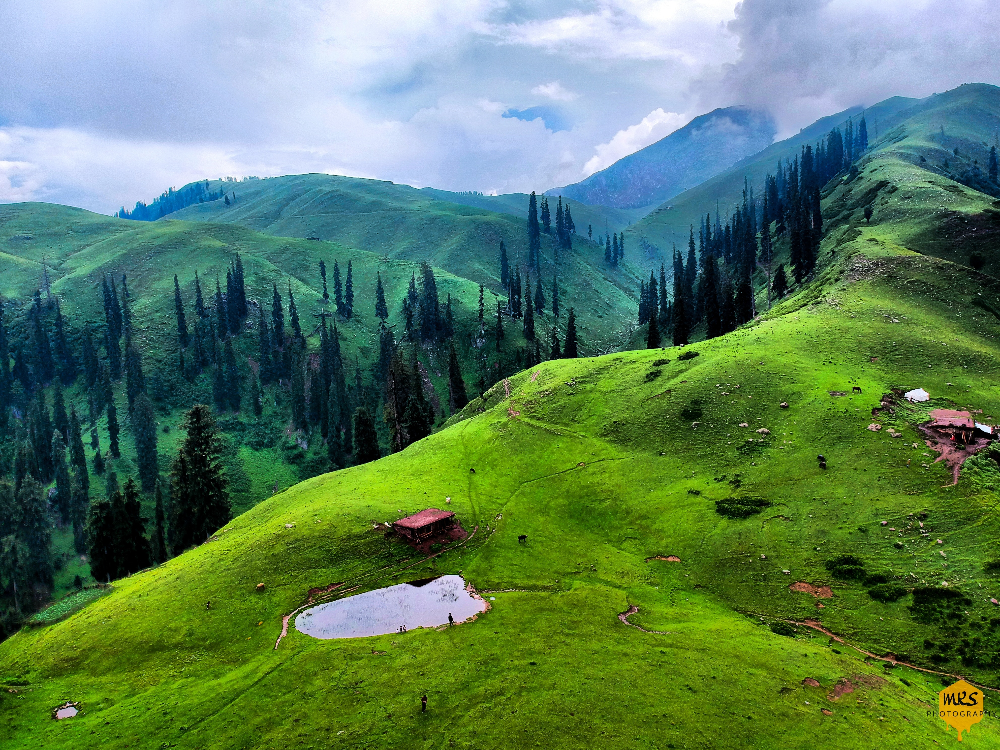

In the cool embrace of an autumn morning, me and my family embarked on a Swat adventure. The winding roads unveiled vistas of
towering pines and meadows awash with wildflowers. Village children played, their laughter echoing through the valley.
In Mingora, the bazaar's lively colors and warm smiles welcomed us. Handicrafts, shawls, and jewelry told tales of Swat's rich heritage.
As the sun set, painting the sky in warm hues, we headed to Malam Jabba.
Malam Jabba revealed a snow-kissed wonderland, serene in its off-season slumber. The next day, a hike through Ushu Forest led us to a
hidden stream, its waters crystal clear.
Evenings by the Swat River became a cherished ritual. The sunset's fiery embrace the scent of wildflowers,
and the song of cicadas became our companions.
As our days in Swat drew to a close, we left with a heart full of gratitude. Swat had offered us more than a journey; it was a communion
with nature's grandeur, a memory forever etched in our souls.

Kalam
Kalam is a valley located 99 kilometres (62 mi) from Mingora in the northern upper section of Swat valley along the banks of the Swat River in the
Khyber Pakhtunkhwa province of Pakistan. The Swat River was formed as a result of the confluence of two major tributaries, the Gabral and Ushu river.
At an elevation about 2,000 m (6,600 ft) above sea level, the valley itself provides a plateau that is located above the river and is used
for farming. There are a number of visible mountains, also visible from Matiltan, a valley close to Kalam Valley, including Mount Falaksar
5,918 meters (19,416 feet), and another unnamed peak 6,096 meters (20,000 feet) high.
Malam Jabba
Malam Jabba is home to one of the two ski resorts in Pakistan, the other being situated in Naltar, Gilgit Baltistan. Along the
main Madyan-Kalam road, a pivotal juncture emerges at Manglor town, approximately 12 km from Saidu Sharif. Here, the route takes a
divergent path, veering towards the Malam-Jabba Dara. There are several settlements, such as Salanda, Jehanabad, Talegraam, Badar,
Ser, Malam, Kishora, Spine Oba, culminating in Jabba.
The village of Malam, positioned prior to Kishora village on the principal Malam-Jabba route, is situated at an approximate distance
of 17 km from Manglor. Continuing along the trajectory, Kishora Village materializes 18 km further. Ascending yet higher, Jabba
emerges as the zenith of this expansive Dara or gorge, standing 12 km from Kishora.
The Malam Jabba Ski Resort, owned by the Pakistan Tourism Development Corporation, occupies a central role in the area. Noteworthy
for its ski slope extending over 800 meters, the resort's apex rests at an elevation of 2804 m (9200 ft) above sea level. This ski
resort is the fruit of collaborative efforts between Pakistan and its Austrian counterpart. The resort was equipped with modern
facilities including roller/ice-skating rinks, chair lifts, skiing platforms, telephones and snow clearing equipment. There was a
wooden motel which had been built to house the construction workers of the ski slope and then opened to the public.